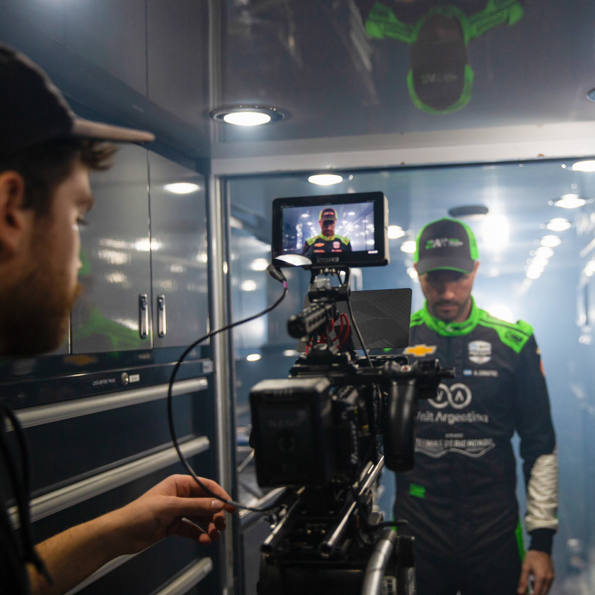
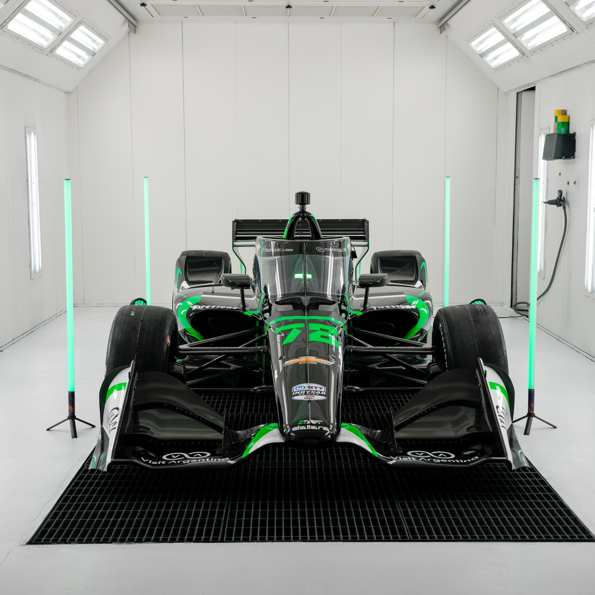
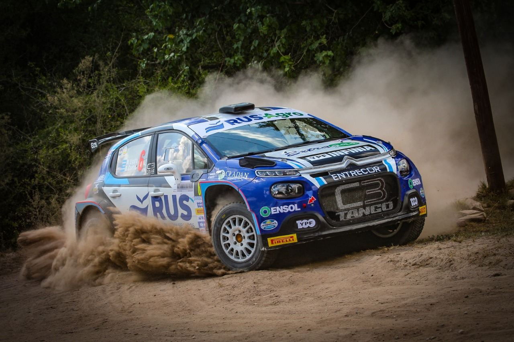

Agustín Canapino, tras su debut en IndyCar: “De los óvalos cuentan cosas terroríficas, que en la primera experiencia la pasás muy mal”
“Venir a mirar una carrera de IndyCar era un logro: imaginá correrla y terminarla”, valora el arrecifeño su 12º puesto en el estreno, en el que terminó ampollado y acalambrado; ya se focaliza en la carrera del 2 de abril en Texas.
"No hay nada más lejano a la realidad que creer que uno está como para competir mano a mano con estos monstruos".

EL RALLY ARGENTINO ESTA PRONTO
A COMENZAR SU CAMPEONATO 2023
EL CAMPEÓN MATIAS CRAVERO ASCIENDE A
LA CLASE 3 DEL TURISMO NACIONAL
Agustín Canapino, tras su debut en IndyCar: “De los óvalos cuentan cosas terroríficas, que en la primera experiencia la pasás muy mal”
“Venir a mirar una carrera de IndyCar era un logro: imaginá correrla y terminarla”, valora el arrecifeño su 12º puesto en el estreno, en el que terminó ampollado y acalambrado; ya se focaliza en la carrera del 2 de abril en Texas.
"No hay nada más lejano a la realidad que creer que uno está como para competir mano a mano con estos monstruos", alerta Canapino, que observa en los debutantes Benjamin Pedersen y Sting Ray Rob a sus rivales directos en IndyCar.
EL RALLY ARGENTINO ESTA PRONTO
A COMENZAR SU CAMPEONATO 2023
EL CAMPEÓN MATIAS CRAVERO ASCIENDE A
LA CLASE 3 DEL TURISMO NACIONAL